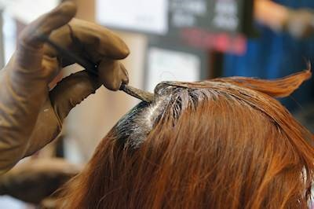

当店では『ソジャットヘナ』はキープ制
――美容室さんという美を生み出す現場で、ヘナがどのように生かされているのかを教えてください。
酒井雅美様 長年にわたって美容師育成に携わってこられたベテラン美容師さん。エリート美容室オーナー。
|
エリート美容室様ではソジャットヘナはキープ制になっています。
|
酒井雅美さん 当店では『ソジャットヘナ』は、お客様のキープ制になっています。
パッケージ裏面にはお客様のお名前や開封日、使用量、回数などを記入して保管しています。
『トリートメントクリア』は普通のカラーリングのお客様のトリートメント用、『サフランオレンジ』『コーヒーブラウン』はヘナで白髪染めをされる方ですね。
ヘナを開封する時には、お客様の目の前で開封するなども注意しています。
開封時の香りなども楽しんでもいただく要素です。ご自宅でなさるときも、当店で使った分量が目安になりますから、喜ばれています。ヘナで弱った毛が元気になりますから、こちらとしても必然的にカットが変わってきます。クセが緩やかになり、ブローしても持ちが違います。
美容室ならではのことかもしれませんが、細くて軟毛でぺちゃんと貼りつくような髪質のお客様がおられます。従来の美容師のアドバイスですと、「パーマをかける」ということになります。実際にそうしたタイプの髪質のお客様がおられ、その方もパーマをあてておられたのですが、お仕事でバイクに乗りヘルメットをかぶられています。そうすると、パーマをかけるメリットがなくなってしまう。髪の毛のボリュームを出したいからパーマをかけているのにその成果が出ない。
私たちから見てももったいないと思いますし、だからご自宅で一度、『トリートメントクリア』を試していただきました。そうすると「違った」と。髪の毛にコシが出てくるし、安心・安全だし。色を気にしなくてよいのでお客様も気兼ねなくできます。
また別のお客様は、安心な「CPシステム」（Chemical protect system／髪と頭皮を保護し、ダメージの原因からカバーしながらカラーやパーマを施すためのトリートメントシステム）のカラーリングをされています。
この方はデパートにお勤めで容姿に気を使っておられます。この方もCPシステムに『サフランオレンジ』を組み合わせておられます。髪の毛のまとまりが違うと評価されています。
人前に立つお仕事なのでその違いには敏感です。
また、別の方はプールに通われており、白髪染めを『サフランオレンジ』と『コーヒーブラウン』でしています。塩素が髪の毛に作用して細くパサパサになりやすいのですが、ヘナを使うことで、髪の毛のまとまりが良いとおっしゃいます。
『サフランオレンジ』ももちろんそうですが、ヘナを使うとくせ毛が落ち着きやすい。お客様が毎日のお手入れが手軽になっていくことと、また、私たちもカットする際には仕事がしやすくなります。
――カットだけのお客様も問題ないのでしょうか。
酒井雅美さん ないです。逆にくせ毛の方は落ち着きやすくなります。加齢とともに髪の毛のくせ・うねりが強くなる傾向があって、そのハネが嫌でカットをされるわけですが、そこにヘナのローソンがまとわりついてくれるので落ち着きます。
お客様にはリラクゼーションなどの好影響があるので、ご自分でも『サフランオレンジ』を積極的に自宅で使っていただきたいのです。ご家庭で使ってみて、もし、ヘナの成分が髪の毛に残っていたとしても安心できます。これが毛染めをされる人にとっては重要です。
また、頭皮にオレンジ色がついてもシャンプーなどで数日で落ちるので気にせずにやってほしいです。実際に、お客さまも気にされないので安心です。ただ、当然ですが中には気になさる方もおられるので、早めに落としたいとおっしゃる方には、オレンジ色がついた頭皮に『コーヒーブラウン』を乗せて15分ほど置くと、オレンジ色は落とせますよ、ということもお伝えしています。
毛染めが時間厳守だったのは、その染料がケミカルだから。
ヘナは、時間が延びても問題ない。
この違いが美容室の業務にとって重要なのです。
――ソジャットヘナの『サフランオレンジ』は高濃度なので、15分〜20分の短時間で染まります。しかし、一般的に美容室さんにとってはヘナは時間がかかって良くないという声が、昔からあります。
酒井雅美さん それが違うのです。「時間を使える」ということがどれくらい大事なことか、ご説明しましょう。普通、パーマでもカラーリングでも、何分経過したら直ちにシャンプーをする、というスケジュール管理が必要になります。ところが、ヘナだと時間に追われなくて済む。時間に追われないししばらく放置しておいても安心・安全なので、お客様も私たち自身も、安心して放置できる。技術者にとってはものすごく楽なんです。お客様も他のお客様との調整によって滞在時間が若干伸びても、身体に良いことを知っておられるので納得されています。
――何が何でも厳密に時間を守らなければならないということではない、ということですね。
酒井雅美さん オーナーとして、あるいは責任者として、上に立つ者はスタッフ各自の技量を見ながら細かな調整、指示を出すわけですが、ヘナだとその心配がないのです。作用する時間は溶き加減などでも調整できますから。
私たちの場合は、今日のこのお客様は乾いた髪の毛のままで行こうとか、ちょっと塗らそうとか、髪質などを踏まえてその場で判断しています。
安心・安全という部分があるのでそのほかの要素でのアレンジはどのようにでもできるのです。私はそういう発想をします。
美容室では時間管理をどう考えるか。という面白い考察もしてみましょう。
女性は昨日まで自分の髪の毛、セットが気に入っていたのですが「今日、ちょっと嫌なので切ってほしい」という方も珍しくありません。そうすると、もしお店が完全予約制だったら、このお客様のための時間を作ることができません。予約制でなければ、お客様が一時に集中することもあります。この時にはカットの技術ではなく接客の技術が必要になります。大変な面もありますが、とっさの対応力を磨くには、予約制だけではないお店づくりも良いものです。
この時間の都合をつけてくれるのがヘナでもあります。
施術例
アルカリカラーと『サフランオレンジ』の併用実験
酒井雅美さん 今日は、アルカリカラーとヘナを使ったトリートメントの実験をします。
すでにパーマをかけているゆかりさん（美容師さん）にモデルになっていただきます。多くの方が美容室やご自宅でなさる毛染めを再現してみます。下処理をせずにアルカリカラーを乾いた髪の毛に使い、全体を染めていきます。染め上がったら今度は髪の毛の半分を『サフランオレンジ』でトリートメントしていきます。
|
今日は、ゆかりさんはセット剤はつけていません。シャンプーをして乾かした状態です。
髪の毛が細くなる要因としての毛染めと、ヘナの組み合わせでどんな違いが出るのか、確認してみましょう。
どんな違いが出るのか一足先にお話ししますと、『サフランオレンジ』を塗布した側だけ、髪の毛の厚みやウェーブの出方、根元の立ち上がり、髪の毛をくしゃっとつかんだ時のボリューム感が変わります。また、髪の毛を面でとらえた時の毛羽立ちも変わりますよ。こうした項目を後ほど確認しましょう。 |
ゆかりさんは今日は、普通のアルカリカラーを使います。
まず、アルカリカラーを用意します
|
アルカリカラーでは生え際をクリームで保護します
|
生え際にはクリームを塗って保護しますが、ヘナの場合には必要ありません。
こういう違いもお客様にとっては興味深いことでしょうね。
アルカリカラーをまず白髪染めの要領で塗布しますよ。
こういう実験っていつやっても面白くて好きですね。
お客様を気遣う毛染めのノウハウ

ハケを垂直にすると頭皮に強い刺激が伝わる |
ハケを寝かせると頭皮への刺激が和らぐ
|
ハケの毛先を地肌に対して垂直に当ててしまうことがあります。こうすると頭皮への刺激になるので、避けてください。
薬剤がついているとしみる可能性がありますので、ハケを寝かして生え際に当てます。地肌には当てません。
昔は「しみる」とおっしゃるお客様は確かに少なかったのですが、今はそれなりにおられるということを知って、その方にも対応できる方法を前提にするべきですね。
当店では、お客様に対して薬剤のけい皮吸収のお話もしています。普段からこのお話をしておくと、安易に自宅でケミカルでの染毛はされないです。また、昔、当店ではヘナのサービスを提供していましたが、質の問題でやめました。ですから当時のことをご存知のお客様には、当時使っていたものとは質が違いますよ。高品質で安心・安全なので、あらためて提供し始めましたと説明しています。
ところで、若い美容師さんにはぜひ覚えておいていただきたいことがあります。
コームの背でしごいて薬液を除去する
|
さらに指でも薬液を除去してから色を確認する
|
例えば、アルカリカラーをしたら、染まりをチェックします。
その時の方法としては、まず髪の毛をきれいに分けます。
そして髪の毛をコームの背でしごくようにして薬剤を除去します。
さらに親指ででももう一度しごいてから髪の毛に付着した薬剤をしっかりと落とします。
それから一筋の毛束をとって、白い紙を後ろに置いたり、明かりに透かしたりしてチェックします。
|
洗髪時にも注意・工夫が必要。
乾いた髪に直接アルカリカラーを塗るというご家庭で比較的行われやすいカラーリングをまずは再現してみました。さて、いったん洗い流してみましょう。
洗髪でも注意していただきたいことがあります。
いきなり熱めのお湯で洗い流そうとすると、頭皮の毛穴が閉まり（収斂し）、染料が残りやすくなるのでまずはお湯をためてお湯の温度を少し下げ手ですくって髪の毛にやさしく当てながら、乳化させます。
ヘナはこうした注意はせずに洗い流し始めても大丈夫です。こういう手間も違います。
ざっくりと落ちたら今度はシャワーを直接あてながら洗い流していきます。
美容室では髪の毛に残っているアルカリ成分を除去するための薬液を使いますが、ご家庭ではその作業工程は省かれると思います。ですから、アルカリ除去をせずにシャンプーをします。
シャンプーはにおいや感触などまた髪の毛にとって良いのか、頭皮にとって良いのかなど、選ぶ項目が多いですね。
――毛染めの場合はどんなシャンプーが良いですか。
薬液を洗い流すことを目的にするシャンプーは何であっても良いですが、最後はせめて弱酸性で仕上げてほしいですね。 |
――可能ならば、二種類は持っておいていただきたいということでしょうか。
酒井雅美さん 昔で言うとそうなのですが、最近はいろんなシャンプーが出回っていて、美容師でもひとつひとつを把握している方はほとんどおられないと思います。
数がありすぎて、ドラッグストアなどで販売されているシャンプーについては何が良いとは言えなくなっています。
ですが、来店された時点でお客様の髪を触ってみて、脂分を落としすぎていたらちょっときつめのシャンプーを使われているのでご注意くださいねとは言えますが、あまりにも様々なシャンプーがあって分かりにくいですね。
ヘナに対しては、頭皮をきれいにするシャンプーを選ぶという指針は立ちます。
また、家庭と美容業界間で、情報がかなり錯そうしています。
ノンシリコンが良い。と言われていますが、傷んでいる髪の毛でノンシリコンシャンプーを使うと、キューティクル同士の摩擦が大きくなって折れたり傷が広がる場合もあります。どんな毛質でもノンシリコンが良いということではなくて、場合によりますね。
髪の毛の状態に応じて選んでください。シャンプーはこだわりを持っておられる方は「自分はこれ」と決めておられますね。 さて、洗いあがりました。
意外なことでさらに心地よくなっていただくという例をお見せしましょう。
当店では洗いあがったら、お客様の首にアロマオイルを含ませたホットタオルを敷きます。心地よくてうっとりとされます。 |

アロマオイルを含ませたホットタオルを首に敷く
|
ヘナの溶き方にもひと工夫あれば、より快適になります
ボウルにヘナを入れたら、まずお湯を入れる前にマドラーでヘナをかき混ぜます。
ボウルの内壁にお湯を這わせ、ボウルをゆすって吸収させます
|
エリート美容室様こだわりの「つや」がでました
|
見た目でなめらかさが出れば、次に、ボウルの内壁にお湯を這わせます。
くるりと一周してからボウルをゆすり、ヘナに水分が吸収されて動かなくなったらもう一度内壁に沿ってお湯を静かに注ぎます。
何度かこれを繰り返すと、ヘナの中心にいきなりお湯を注ぐよりも、早くきれいなペーストになりやすいですね。
中心にいきなりお湯を注ぐと、周辺のところで大きなダマが残りやすいと思います。
きれいに溶けると、このようなつやが出ます。これでケアすると気持ち良いですよ。
きちんと下ごしらえをすると良い結果が出ます。
頭の左半分にだけサフランオレンジを置きます
|

頭皮と髪に置いていくイメージ
|
美容師さんはヘアカラーは慣れているのですが、ヘナの場合はカラーの施術とは少し違って、頭皮や髪にヘナのペーストをしっかりと盛ります。「地肌と髪の毛にヘナを置いていく」というイメージで施術してください。
左半分にだけ塗り終えました
|
鏡に映ったモデルさん。すでに顔の左右で表情が違います
|
サフランオレンジは20分置けば十分です
当店では『サフランオレンジ』だと20分置くことが多いです
お話ししたようにここからお店が込みだしたら、お客様には事情を説明して、ヘナケアの時間を延ばすことができます。
長時間置いても安心なので、非常に使いやすいです。
ゆかりさん ヘナを塗ったのが左側。今、左半身が暖かいと感じています。顔の左右差が出てきましたね。 |
洗い上がり
ヘナで髪の毛のコシが復活したことと、傷んでいる固さは違う
ヘナを塗った左側の手触りが、ハリとコシが出ています。
でも、一般的にはこのしっかりした感じを傷んでいると勘違いされる場合があります。傷んでいるのとは違います。ローソンがケラチンにまとわりついているから、がっちりとした感じになっているのです。
傷んでいるのではないです。ここはしっかりとご理解いただきたいですね。
アルカリカラーだけの右側
|

アルカリからの上からサフランオレンジをした左側
|
ウェーブが左右で違います。ヘナをしたほうがウェーブがしっかりと回復します。
空気と混ざるとウェーブが出やすくなります。
（この写真の時点では）ただ洗っただけで、トリートメントはしていません。
さらにはクシも通していない状態でこれだけの差が出ます。
こうした差が生まれるのに、20分置けば十分です。
――これは、パーマのお客様に喜んでいただけますね。
酒井雅美さん もうひとつ重要な要素があります。モノが良いだけではなくてこれを言葉で伝える美容師さんが必要なんです。
お客様はこういう情報がほしいのです。モノが良いだけでは不十分です。
化粧品一つをとってみても、作用をきちんと説明できて、その言葉通りの結果が出て、その結果をお客様と共有できる。
美容師さんはこうしたことを大切にして、情報を伝えてください。
左半分がサフランオレンジを追加
|
左半分がサフランオレンジを追加
|
ゆかりさん こんなことは、こんなふうにしてわざと半分だけの実験をしないとまずわからないですよね。
目や口角が上がるといった変化も左右差があってわかることですね。髪の毛の厚みも差が出てきました。
頭頂部の立ち上がりもふっくらとして良いです。つやが全然違いますね。
ヘナをした後特有の手触りの意味を知る
酒井雅美さん 通常、美容室では、乾かしきった髪の毛にブローすることはあまりないですが、ご家庭での再現の意味もありますので、ここからさらにブローをしてみましょう。
ヘナをしていない側は乾燥した髪にドライヤーを当てているので、その摩擦で静電気が起こってきます。
一方、ヘナをした側は、乾くとこんなふうに落ち着いてまとまります。これが、シャンプー後のしっかりした感じからの変化です。
だから、シャンプー後の感覚を、ごわごわだと思うのはあまりにももったいない感想だというのが、これで分かります。
前髪も今、よくわかります。アルカリカラーだけの方はペタンとしています。一方、ヘナをした側はボリュームが出ています。頭を振ってみましょう。ちょうど、髪の毛が風になびいた状態を再現します。そうすると、もっと差が広がってきますよ。
健康的で美しい髪をつくるためにも、質の良いヘナは重要ですね。Fin. |
|
左半分だけサフランオレンジを追加し、トリートメントした結果
左右でかなり大きな差が出ています
|
こちら側はサフランオレンジでのトリートメントをした
|
髪の毛の毛羽立ち、まとまり、カールなど差が大きく開きます
|
こちら側はアルカリカラーのみ
|
エリート美容室は２店舗展開されています。
〒661-0047 兵庫県尼崎市西昆陽3-21-6 電話 06-6432-6818
〒661-0047 兵庫県尼崎市西昆陽1-1-27 電話 06-3861-5464 |